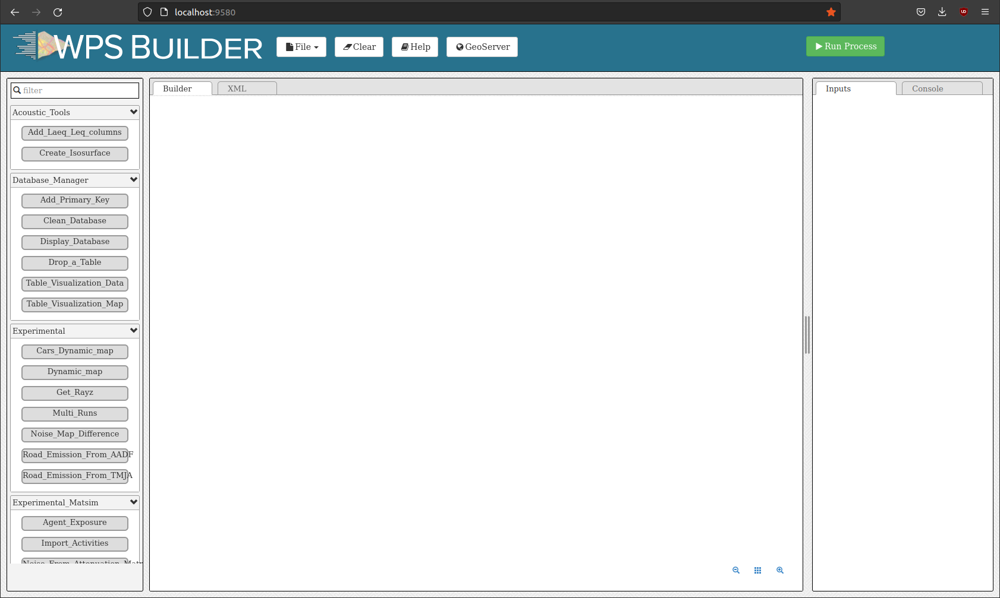
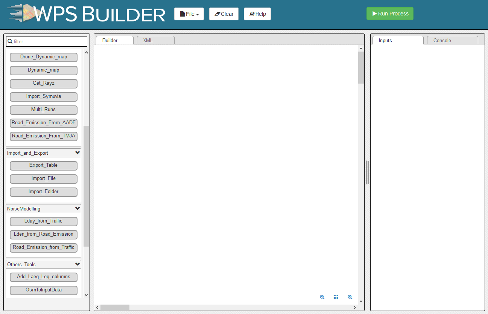
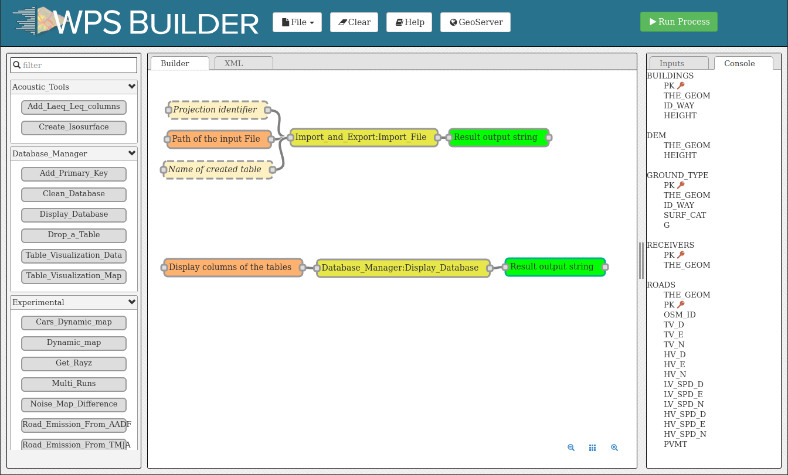
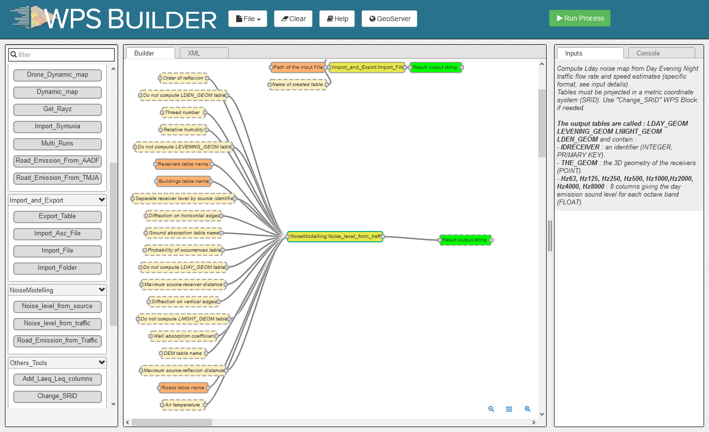
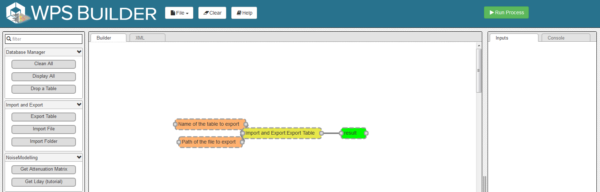
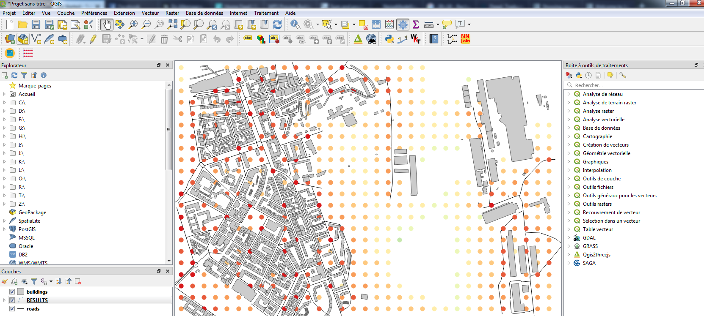
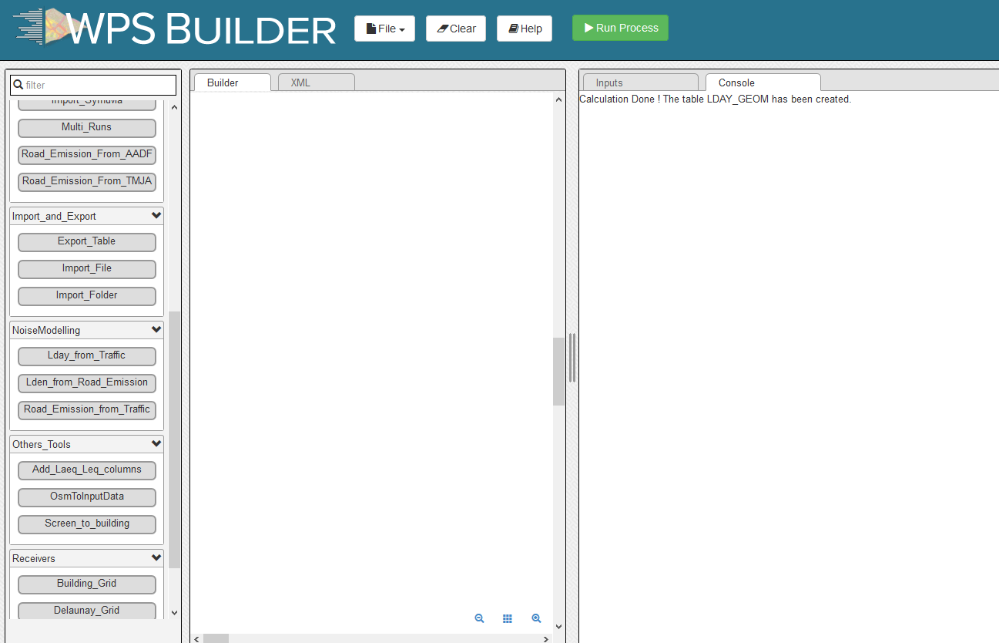

Get Started - GUI
Below we present a simple application case, allowing you to discover NoiseModelling through its Graphical User Interface .
Step 1: Download NoiseModelling
Download the latest realease of NoiseModelling on Github.
Windows: you can directly download and execute the
NoiseModelling_4.x.x_install.exeinstaller file (or you can also follow Linux / Mac instructions below)Linux or Mac: download the
NoiseModelling_4.x.x.zipfile and unzip it into a chosen directory
Warning
The chosen directory can be anywhere, but be sure that you have write access. If you are using the computer of your company, the Program Files folder is probably not a good idea.
Warning
For Linux and Mac users, please make sure your Java environment is well setted. For more information, please read the page Requirements. Windows users who are using the .exe file are not concerned since the Java Runtime Environment is already embeded.
Note
Only from version 3.3, NoiseModelling releases include the user interface described in this tutorial.
Step 2: Start NoiseModelling GUI
As seen in the page “Architecture”, NoiseModelling can be used through a Graphic User Interface (GUI), thanks to Geoserver and WPS Builder bricks.
In this tutorial, we will use the default and already configured H2GIS database.
Those tools (Geoserver, WPS Builder and H2GIS) are already included in the archive. So you don’t have to install them before.
To launch NoiseModelling with GUI, please execute :
Windows:
NoiseModelling.exeorNoiseModelling_xxx\bin\startup_windows.batLinux or Mac:
NoiseModelling_xxx/bin/startup_linux_mac.sh(check authorize file execution in property of this file before)
and wait until INFO:oejs.Server:main:Started is written in your command prompt.
Warning
Depending on your computer configuration, the NoiseModelling launch can take some time. Be patient.
NoiseModelling with GUI is now started.
Tip
NoiseModelling will be open as long as the command window is open. If you close it, NoiseModelling will automatically be closed and you will not be able to continue with the tutorial.
Step 3: Open NoiseModelling GUI
The NoiseModelling GUI is built thanks to the WPS Builder brick. To open it, just go to http://localhost:9580 using your preferred web browser.
{kind=link}

Warning
On former versions of NoiseModelling, the url was: http://localhost:8080/geoserver/web/
You are now ready to discover the power of NoiseModelling!
Step 4: Load input files
To compute your first noise map, you will need to load input geographic files into the NoiseModelling database.
In this tutorial, we have 5 layers, zoomed in the city center of Lorient (France): Buildings, Roads, Ground type, Topography (DEM) and Receivers.
In the noisemodelling/data_dir/data/wpsdata/ folder, you will find the 5 files (4 shapefiles and 1 geojson) corresponding to these layers.
You can import these layers in your database using the Import File or Import Folder blocks.
Drag
Import Fileblock into the Builder windowSelect
Path of the input Filebox and writedata_dir/data/wpsdata/buildings.shpin the fieldPathFile(on the right-side column)Then click on
Run Processafter selecting one of the sub-boxes of your process

Repeat this operation for the 4 other files:
data_dir/data/wpsdata/ground_type.shpdata_dir/data/wpsdata/receivers.shpdata_dir/data/wpsdata/ROADS2.shpdata_dir/data/wpsdata/dem.geojson
Files are uploaded to database when the Console window displays The table x has been uploaded to database.
Note
If you have the message
Error opening database, please refer to the note in Step 1.The process is supposed to be quick (<5 sec.). In case of out of time, try to restart NoiseModelling (see Step 2).
Orange blocks are mandatory
Beige blocks are optional
If all input blocks are optional, you must modify at least one of these blocks to be able to run the process
Blocks get solid border when they are ready to run
Read the WPS Builder page for more information
Once done, you can check if the tables have been well imported in the database. To do so, drag/drop and execute the Display_Database WPS script (in the “Database_Manager” part). You should see on the right panel the tables list (and their columns if you checked the the option in the Display columns of the tables block).
{kind=link}

Step 5: Run Calculation
To run Calculation you have to drag the block Noise_level_from_traffic into WPS Builder window.
Then, select the orange blocks and indicate the name of the corresponding table in your database:
Building table name :
BUILDINGSSources table name :
ROADS2Receivers table name :
RECEIVERS
The beige blocks correspond to optionnal parameters (e.g DEM table name, Ground absorption table name, Diffraction on vertical edges, …).
When ready, you can press Run Process.

As a result, the tables LDAY_GEOM, LEVENING_GEOM, LNIGHT_GEOM and LDEN_GEOM will be created in your database. These tables correspond to the noise levels, based on receiver points, for the 4 different period of the day.
Step 6: Export (& see) the results
You can now export the output tables (one by one) in your favorite export format using Export_Table block, giving the path of the file you want to create.
Warning
Dont’ forget to add the file extension (e.g c:/home/receivers.geojson or c:/home/lday_geom.shp) (Read more info about file extensions here: Tutorials - FAQ)

For example, you can choose to export the tables in .shp format. This format can be read with most of GIS tools such as the free and open-source QGIS and SAGA softwares.
Note
For those who are new to GIS and want to get started with QGIS, we advise you to follow this tutorial as a start.
To obtain the following image, use the syling vector options in your GIS and assign a color gradient to LAEQ column of your exported LDAY_GEOM table.

Tip
Now that you have made your first noise map (congratulations!), you can try again, adding / changing optional parameters to see the differeneces.
Step 7: Know the possibilities
Now that you have finished this introduction tutorial, take the time to read the description of each of the WPS blocks present in your NoiseModelling version.
By clicking on each of the inputs or outputs, you will find a lot of information.
